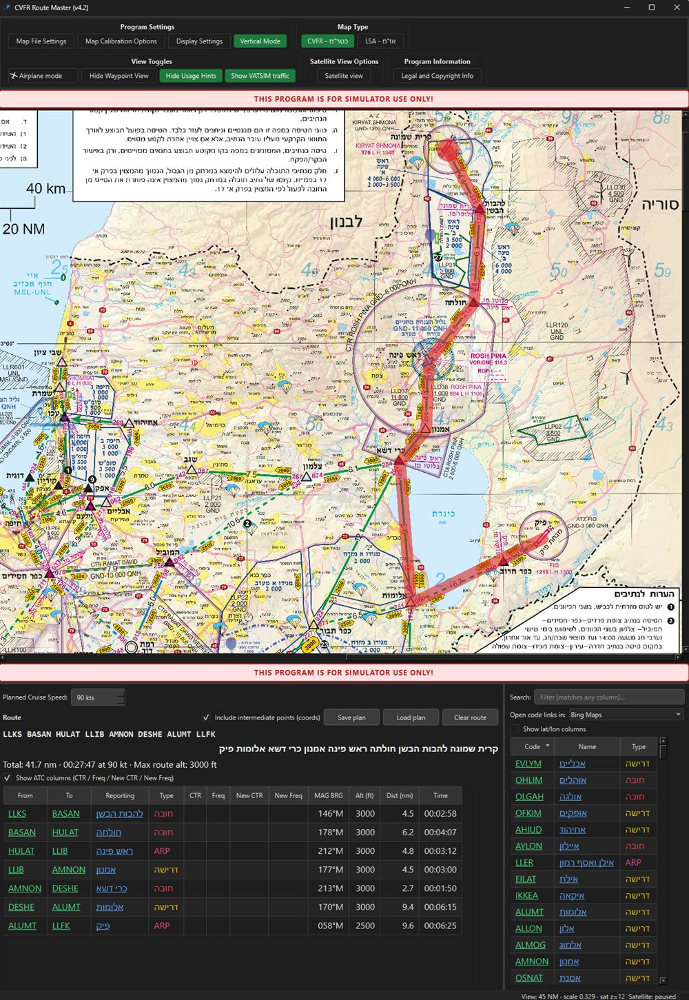
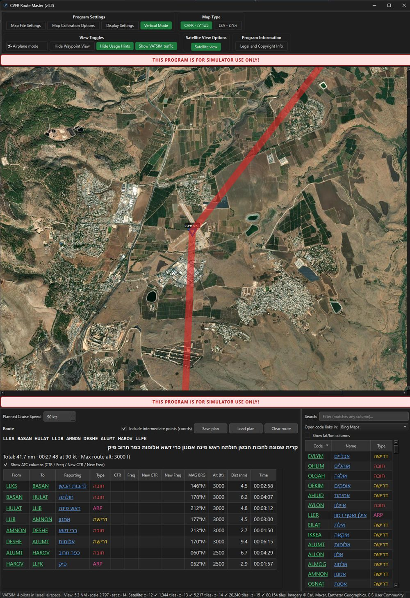
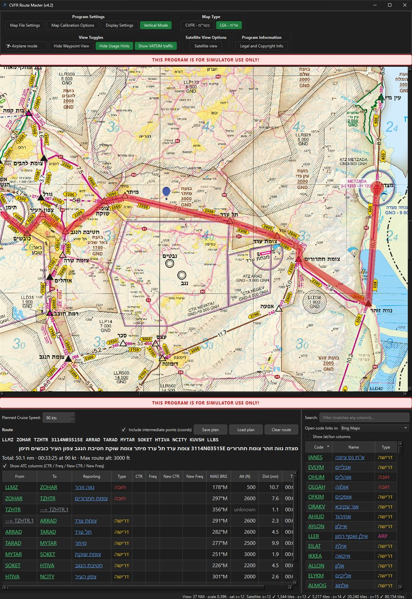
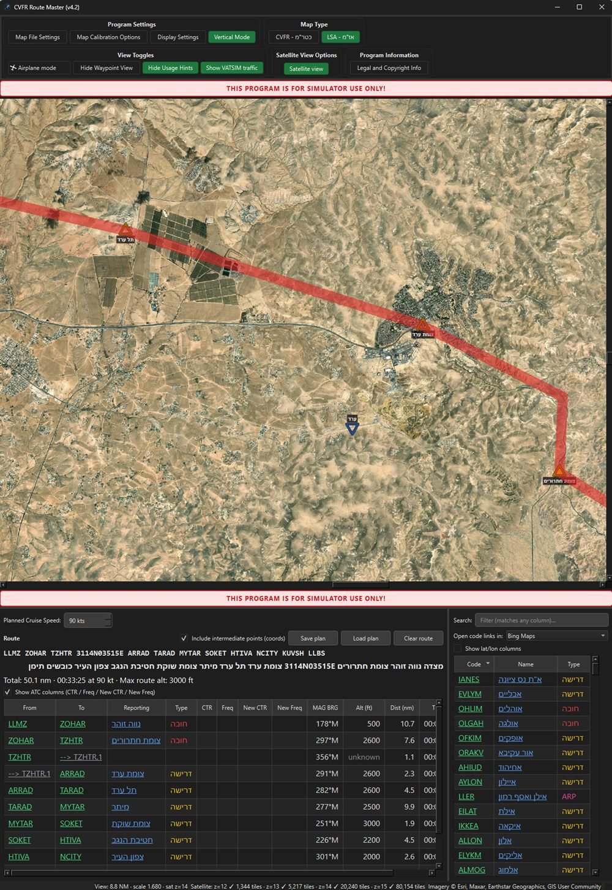

What it does
- Combines the CAAI CVFR and LSA-CVFR charts with satellite imagery of Israel.
- Plan a route by clicking reporting points on the chart (for example LLHZ Herzliya, then BAZRA).
- Computes distances, times and magnetic bearings between waypoints, including arbitrary intermediate points.
- Reads route altitudes from the arrows printed on the chart.
- Produces a route string that is easy to paste into a VATSIM flight plan; save and load routes.
- Shows the route on both the chart and satellite imagery, so you can learn the visual landmarks.
- Optional live VATSIM traffic over Israel (callsign, type, altitude, speed), updated every 15 seconds.
- Search waypoints by name and open them in Google, Apple or Bing satellite views.
Getting started
No installation: extract the 7z archive and run the executable. On first launch the tool downloads the charts from CAAI and then about 2 GB of satellite imagery in the background. Linux users can run it from source.
מה התוכנה עושה
- משלבת את מפות הכטר"מ והאז"מ של רת"א עם צילומי לוויין של ישראל.
- תכנון מסלול בלחיצה על נקודות הדיווח במפה (למשל LLHZ הרצליה, ואחריה BAZRA).
- חישוב מרחקים, זמנים וכיוונים מגנטיים בין נקודות דרך, כולל נקודות ביניים שרירותיות.
- קריאת גובהי המסלול מהחצים המודפסים על המפה.
- הפקת מסלול שקל להעתיק לתוכנית טיסה ב-VATSIM, ושמירה וטעינה של מסלולים.
- הצגת המסלול על המפה ועל צילומי הלוויין, כדי ללמוד את ציוני הדרך החזותיים.
- הצגת תנועה חיה מ-VATSIM מעל ישראל (אות קריאה, סוג, גובה, מהירות), עדכון כל 15 שניות.
- חיפוש נקודות דרך לפי שם ופתיחתן בתצוגות הלוויין של Google, Apple ו-Bing.
איך מתחילים
אין צורך בהתקנה: מחלצים את קובץ ה-7z ומריצים את קובץ ההפעלה. בהפעלה הראשונה התוכנה מורידה את המפות מרת"א, ואחר כך כ-2 GB של צילומי לוויין ברקע. ב-Linux ניתן להריץ מקוד המקור.
For flight-simulator use only — NOT for real-world aviation.
לשימוש בסימולטורי טיסה בלבד — לא לתעופה אמיתית.